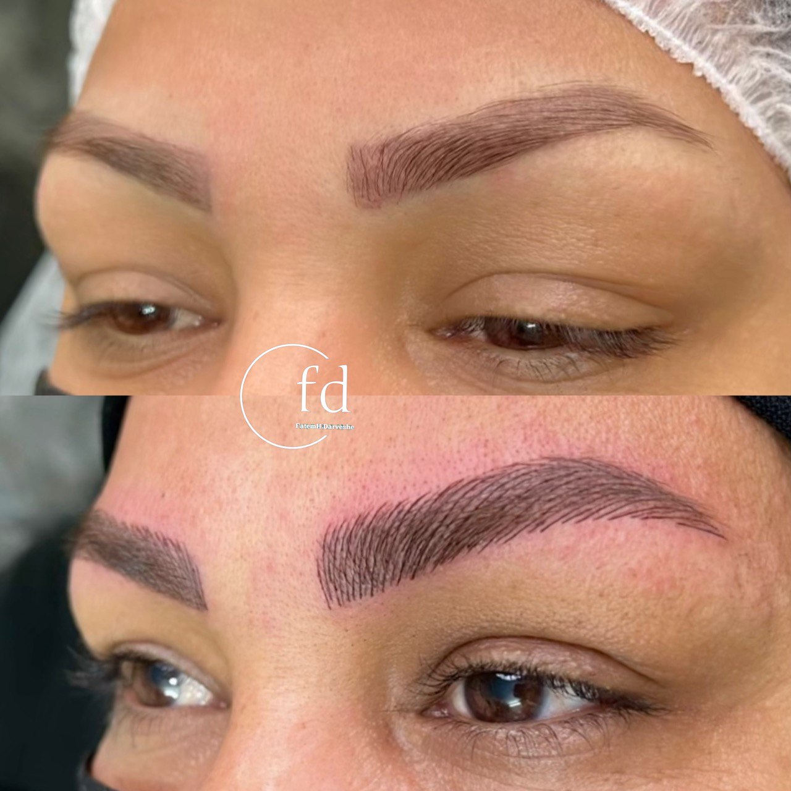

هزینه و قیمت میکروبلیدینگ در مشهد (راهنمای کامل سال ۱۴۰۴)
نوشته شده در تاریخ ۵ مرداد ۱۴۰۴ - توسط: م. اشرفی
یکی از اولین و مهمترین سوالاتی که برای متقاضیان میکروبلیدینگ پیش میآید، هزینه و قیمت این خدمت زیبایی است. اگر شما هم در مشهد زندگی میکنید و به دنبال اطلاع از **قیمت میکروبلیدینگ در سال ۱۴۰۴** هستید، این راهنما به شما کمک میکند تا با دیدی باز و آگاهانه تصمیم بگیرید. قیمت میکروبلیدینگ یک عدد ثابت نیست و تحت تاثیر عوامل مختلفی قرار دارد که در ادامه به تفصیل آنها را بررسی میکنیم.
عوامل اصلی تعیین کننده قیمت میکروبلیدینگ در مشهد
چرا هزینه میکروبلیدینگ در یک سالن با سالن دیگر متفاوت است؟ پاسخ در کیفیت و جزئیات کار نهفته است. در ادامه ۴ عامل کلیدی را بررسی میکنیم:
- تجربه و تخصص پیگمنتر: یک متخصص باتجربه که دورههای متعدد دیده و نمونه کارهای قوی دارد، طبیعتاً هزینه بیشتری دریافت میکند. این هزینه در واقع سرمایهگذاری شما روی زیبایی و سلامت خودتان است.
- کیفیت مواد مصرفی (رنگدانهها): استفاده از رنگهای ارگانیک، باکیفیت و دارای تاییدیه که به مرور زمان تغییر رنگ نمیدهند، هزینه بیشتری دارد. **مراکز ارزانقیمت** معمولاً از رنگهای بیکیفیت استفاده میکنند که میتواند منجر به قرمزی یا دودی شدن ابرو شود.
- بهداشت و تجهیزات: رعایت کامل پروتکلهای بهداشتی و استفاده از تجهیزات یکبار مصرف و استریل، هزینههایی را برای مرکز به همراه دارد که در قیمت نهایی لحاظ میشود.
- موقعیت مکانی سالن: موقعیت جغرافیایی سالن و سطح خدماتی که ارائه میدهد نیز میتواند بر قیمتگذاری تاثیرگذار باشد.
میکروبلیدینگ ارزان در مشهد: یک ریسک بزرگ!
همیشه به یاد داشته باشید که میکروبلیدینگ یک کار تخصصی و حساس است که مستقیماً با چهره و سلامت شما در ارتباط است. قیمتهای بسیار پایین و وسوسهانگیز، معمولاً یک زنگ خطر است. این مراکز ممکن است از مواد بیکیفیت استفاده کنند یا تجربه کافی نداشته باشند که نتیجه آن میتواند یک ابروی غیرطبیعی، نامتقارن و حتی ایجاد عفونت باشد. **زیبایی شما ارزش ریسک کردن ندارد.**
تعهد ما به کیفیت: در مرکز زیبایی فاطمه درویشی، ما شفافیت کامل در قیمتگذاری داریم. هزینه اعلام شده به شما، تضمینکننده استفاده از بهترین مواد ارگانیک، تجهیزات کاملاً استریل و سالها تجربه و هنر برای خلق بهترین نتیجه ممکن است. برای دریافت مشاوره و اطلاع از قیمت دقیق، با ما در تماس باشید.
آیا هزینه میکروبلیدینگ شامل ترمیم میشود؟
در اکثر مراکز حرفهای، هزینه اعلام شده شامل **یک جلسه ترمیم اولیه** (معمولاً بین ۴ تا ۶ هفته بعد از جلسه اول) میشود. این جلسه برای تثبیت رنگ و رفع ایرادات جزئی احتمالی ضروری است. حتماً قبل از انجام کار، این موضوع را از مرکز مورد نظر خود سوال کنید.